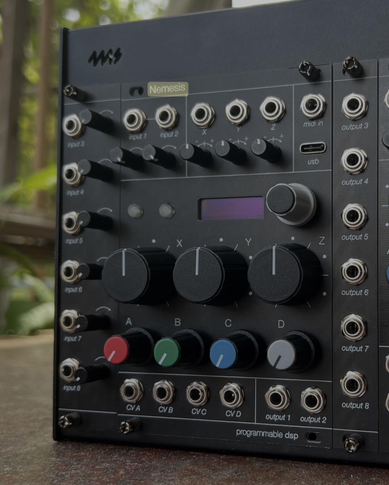
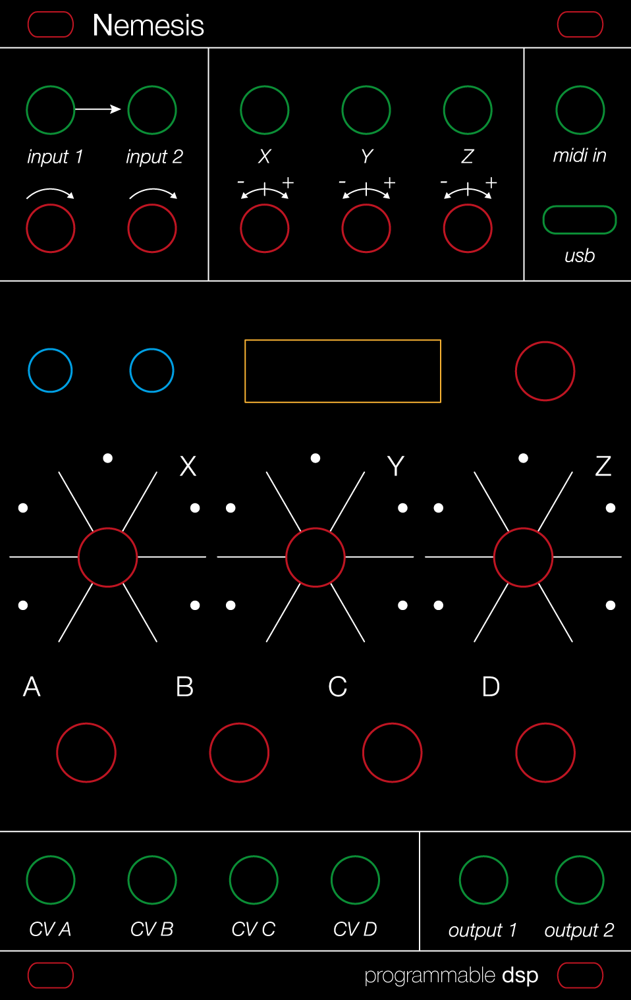

Nemesis: fifteen programs, one module
An eight in, eight out Eurorack DSP module running FAUST programs: reverbs, delays, a granulator, a spectral freeze and delay, a vactrol filter with drive, glitch and beat effects, FM and polyphonic synthesizers and a percussion voice, chosen on the display and played with seven knobs, four CV inputs and MIDI.

Overview
Nemesis is a Teensy 4.1 with a CS42448 codec: eight audio inputs and eight DC coupled outputs, all of them sampled at 48 or 96 kHz. What the jacks and knobs do depends on the program you pick. All programs share the same panel layout, so the big knobs X Y Z always hold the main gestures (size, time, pitch, decay), the small A B C D the second layer, and everything else is a setting behind the encoder.

Jacks
| Jack | Signal |
|---|---|
| input 1 input 2 | the main stereo audio input, with a gain knob each (±5 V fits at full gain). Input 1 is normalled to input 2 (the arrow): a mono source in input 1 feeds both |
| input 3–8 | audio, with attenuators on the input strip. Some programs take triggers here (strike: IN 1–6), and IN 8 can be the clock input |
| X Y Z | CV added to the big knobs through an attenuverter (−/+), about ±4 V |
| CV A–D | CV 0–8 V (or 0–5 V, a system setting): added to A–D or routed to any setting, per program. V/Oct and gates where a program asks for them |
| output 1 output 2 | the main stereo output, ±5 V, DC coupled |
| output 3–8 | per program: more audio (rear, wet, sidebands, single voices) or CV, gates and triggers (envelopes, clocks, pitch) |
| midi in | MIDI on a 3.5 mm TRS jack, type B (see MIDI) |
| usb | USB MIDI (“Nemesis rev2”), serial for the remote page, firmware updates |
Controls
| Control | Use |
|---|---|
| X Y Z | the program's three main parameters. Each is summed with its CV jack |
| A B C D | four more parameters, usually with CV A–D added |
| Encoder | turn, click and hold: settings, program list and system settings (see Display & menus) |
| Buttons 1 and 2 | per program (freeze, next voice, play); their LEDs show what the program says (beat, freeze, repeat). Both held for 2 s: knob calibration |
| Display | 128 × 32 OLED: the program, its CPU load, tempo, values and menus |
Getting started
The module starts the program that ran last. The outputs stay muted for 0.4 s while the codec settles, then the program fades in. With an SD card inserted, every program's settings and the system settings are loaded from it.
- Patch a stereo source into input 1/input 2 and output 1/output 2 to your mixer.
- Hold the encoder: the program list opens. Turn to a program and click: it loads.
- Turn the knobs. The display shows each parameter's name and value while you turn it.
- Click the encoder for the program's settings: turn to a row, click to edit, turn to change, click again.
A program is remembered for the next power-up once it has run for 10 seconds. Hold the encoder while powering up to start the first program (juno) instead.
Playing
Knobs and CV
The big knobs X Y Z are summed with their CV jacks in hardware: the attenuverter above each jack sets how much and which way the CV moves the knob's parameter. With nothing patched, the knob alone sets it.
The small knobs A–D are read by the processor; most programs add CV A–D to them. Some programs leave a CV jack free for you to route to any setting (gate, V/Oct, freeze), see Program settings. CV A–D are unipolar: an unpatched jack reads 0 V.
Every program remembers where each knob was. After a program switch or a preset, a knob's stored value and its position differ; what happens then is the system setting knobs:
| knobs | Behaviour |
|---|---|
| jump | the knob takes over as soon as it moves (1 % of its travel) |
| catch | the knob takes over when it reaches the stored value; until then the popup shows a tick where the knob stands |
Levels
The outputs are DC coupled: full scale is ±5 V. CV, gate and pitch outputs are calibrated in volts. Every program has the setting output, which decides what its audio outputs do above 4.4 V:
| output | Above 4.4 V |
|---|---|
| clip | nothing: the converter clips hard |
| soft | transparent up to 4.4 V, then bends into 4.9 V (the default) |
| tape | gradual saturation over the whole range |
| fold | folds the wave back at 4.9 V: a wavefolder |
Only the audio outputs are shaped; CV outputs stay exact. When an output clips, the top right of the home screen shows CLIP for half a second; a program with its own limiter shows its gain reduction there (lim -3 dB).
Program switches fade out and in (15 / 30 ms), so switching while patched to a speaker is safe.
Display & menus
Everything is reached with the encoder from the home screen:
| Where | Turn | Click | Hold (0.6 s) |
|---|---|---|---|
| Home | the program's home setting (juno: patch), else the settings open | program settings | program list |
| Program settings | move the cursor (editing: change the value) | edit / done | program list |
| Program list | choose a program | load it | system settings |
| System settings | move the cursor (editing: change the value) | edit / done | home |
The program settings and the program list close after 2 seconds without input (not while editing). The system settings stay open until you hold the encoder; the last row of every program's settings, system >, opens them too. Lists remember where you left them. Turning fast takes bigger steps.
Program settings click
Every parameter of a program that has no knob is a setting. Settings are stored per program on the SD card a moment after you change them and come back with the program. The list holds, in this order:
| Row | What it is |
|---|---|
| preset | only in programs with presets (juno: the 128 Juno-106 factory patches). Choosing one sets every parameter; knobs then take over by jump or catch |
| the settings | the program's parameters, sometimes under section headers (strike: object, exciter, output, random, kit). Some only appear when another is on (mooSpace2's lag shows ms or note values depending on sync) |
| output | clip, soft, tape or fold (see Levels) |
| CV A … CV D | the CV jacks a program leaves free: route each to any setting, or off. A routed gate setting switches above 4 V (2.5 V in the 0–5 V range); a pitch target follows 1 V/oct |
| system > | opens the system settings |
Rolling random sounds
strike has a roll setting: click it, then every detent right rolls a new random sound, every detent left goes back one (a history of 16; #0 is where you started). target picks what a roll changes (the selected voice or all), amount how far (100 % fully random). A roll leaves alone what you are playing: settings a knob holds and settings with a CV that carries a signal.
Tempo, clock & MIDI
One transport runs for the whole module: a position in bars and beats that the rhythmic programs follow (breaker, pollen, bitrot, primetime, mooSpace2 with sync). It runs on the internal tempo, follows MIDI clock, or follows a clock on input 8.
| clock | Source |
|---|---|
| auto | MIDI clock while one arrives; when it stops, the position holds and after 0.3 s the internal tempo takes over |
| internal | the tempo setting; run starts and stops it |
| MIDI | MIDI clock (jack or USB). Start goes to the downbeat, Stop and Continue stop and resume, Song Position sets the position |
| IN 8 | a clock or gate on input 8: 1/4, 1/8, 1/16 notes or 24 ppqn (setting IN 8 pulses). Pulses after a pause start at the downbeat; it stops when they stop. IN 8 is silent in the program meanwhile |
The clock is followed by a phase locked loop, so the position stays smooth and within a few samples of the clock. While following a clock, the tempo setting shows its tempo with a star (120.0*). clock offset (±50 ms) moves the module's grid against the clock to make up for latency.
MIDI
MIDI comes from the midi in jack and from USB (the module is a USB MIDI device called “Nemesis rev2”). The MIDI channel system setting filters notes and controllers (omni or 1–16). juno, superosc, growler, harmonizer (control: keyboard) and strike (setting midi) play notes; juno's parameters also follow MIDI controllers.
TRS type B: the jack is wired tip = source, ring = sink. Use a type B cable or adapter; for type A gear, a type A/B swap adapter.
System settings hold in the program list
| Setting | Values |
|---|---|
| run | on / off: starts and stops the internal transport |
| clock | auto, internal, MIDI, IN 8 |
| IN 8 pulses | 1/4, 1/8, 1/16, 24 ppqn |
| tempo | the internal tempo in BPM (a clock's tempo with *) |
| clock offset | −50 … +50 ms |
| MIDI channel | omni, 1–16 |
| knob popup | on / off: the knob popup on the display |
| knobs | jump / catch (see Playing) |
| brightness | display, 1–10 |
| LED brightness | button LEDs, 1–10 (default 5) |
| CV A-D range | 0–8 V or 0–5 V: the voltage that turns a parameter fully up |
| block size | auto (the program's choice), 32, 64, 128 samples. Smaller blocks: less latency (1.8 / 3.2 / 5.8 ms through the module), higher CPU peaks. Not stored |
| sample rate | auto (the program's choice), 48k, 96k. Changing it restarts the program. Not stored |
Run, clock, tempo, offset, MIDI channel, popup, knobs, both brightnesses and the CV range are stored on the SD card; block size and sample rate start at auto at every power-up.
Programs
Fifteen programs, in the order of the program list. Each lists its knobs and jacks for rev2; everything not on a knob is a setting.
juno 1 · synth
Juno-106 style polysynth, 12 voices, chorus, 128 factory patches. MIDI.
mooSpace 2 · reverb
Variable space reverb: smear, decay, drag.
mooSpace2 3 · reverb
Moving spaces: wider ranges, shimmer, reverse, freeze, echoes, eight outputs.
freqshift 4 · effect
Stereo frequency shifter with feedback delay, sidebands and a quadrature oscillator.
superosc 5 · drone
Root, fourth and fifth as detuned saws through a ladder filter. MIDI, V/Oct.
breaker 6 · beats
Slice repeat and reverse, crush, comb, drive, six drum triggers.
growler 7 · synth
Stereo 4-operator FM bass built around cross modulation.
pollen 8 · granular
Live granulator and looper with blur, free or on the transport.
strike 9 · percussion
Six modal percussion voices, triggers on IN 1–6 and MIDI, random rolls.
bitrot 10 · glitch
A buffer that stutters, skips, reverses and stops like tape; data errors.
primetime 11 · delay
Two tap delay after the Lexicon Prime Time II.
harmonizer 12 · pitch
Pitch changer and delay after the Eventide H949.
slush 13 · spectral
Spectral freeze and smear: endless, moving held sounds.
prism 14 · spectral
Spectral delay: every band its own delay, skewed from the lows to the highs.
glow 15 · filter
Vactrol band-pass and MOSFET drive with feedback: filter, fuzz, oscillator, LFO, CV shaper.
juno 1 · v0.17 · 48 kHz · MIDI
A Juno-106 style polysynth: DCO with saw, pulse, sub and noise, high-pass, a 4-pole filter, ADSR, LFO and chorus I/II, with the 106's measured curves. Twelve voices at 48 kHz (six at 96 kHz), each at its own place in the stereo field. Play it from MIDI; the encoder on the home screen chooses one of the 128 factory patches, whose name the home screen shows.
| Control | Parameter |
|---|---|
| X Y Z | cutoff, resonance, envelope amount |
| A–D + CV A–D | attack, decay, sustain, release |
| Encoder turn (home) | patch |
| Outputs | 1/2 stereo |
Settings: patch, keys (poly 1, poly 2, unison), LFO rate, delay and depths, PWM and its mode, range, oscillator mix, HPF (0 boost, 1 flat, 2, 3), envelope polarity, VCA env/gate, chorus (off, I, II, I+II), drift, bass comp, volume. Most of them also follow MIDI controllers. Pitch bend ±2 semitones.
mooSpace 2 · v0.4 · 48 kHz
The original variable space reverb: input diffusion into a figure-eight tank with diffusers in its feedback and multi-tap allpasses. Stereo in 1/2, out 1/2.
| Control | Parameter |
|---|---|
| X Y Z | smear (diffusion), decay, drag (time stretch) |
| A B + CV | filter, modulate |
| C D + CV | colour, mix |
Settings: lag (predelay), push (drive).
mooSpace2 3 · v2.8 · 48 kHz
Moving spaces: mooSpace's algorithm with wider ranges, and when the space moves its delays glide (pitch) or crossfade (no pitch). The knob centres sit where mooSpace's defaults were.
| Control | Parameter |
|---|---|
| X smear | how much the sound blurs: the strength of every diffuser. Left clear, separate reflections; right dense |
| Y decay | tail time, 0.4 s to 60 s, endless at the far right |
| Z drag | how far the space stretches in time: diffuser lengths and late taps. Left tight, right long and dragging |
| A reverse | fades the tank's input from forward to reversed pieces (⅓ s, or a note value with sync) |
| B shimmer | a pitch shifter (setting shift, +12 by default) where input and feedback enter the tank: an octave reverb at short decays, rising octaves at long ones |
| C tone | in the tank: centre neutral, left darker, right thinner |
| D mix | dry / wet; CV A–D add to A–D |
Outputs
1/2 mix (limited to 4.5 V) · 3/4 rear (wet, decorrelated: quad with 1/2) · 5/6 wet only · 7 tail envelope · 8 input envelope (CV 0–5 V).
Settings: sync (lag, late taps and reverse pieces on the tempo), reverse length, freeze (input out, tail held), echoes and echo time (ping-pong taps from the reverse buffers), duck (wet down while the input plays), gate (wet chopped on the transport grid), lofi (down to 4 kHz / 6 bit in the feedback), modulate, shift, lag (ms or a note value), push, motion (on: glide, off: 25 ms crossfades).
freqshift 4 · v0.2 · 96 kHz
A Bode style frequency shifter: every partial moves by the same number of Hz. Small shifts phase and beat, large ones turn metallic and inharmonic. Through the feedback delay each echo is shifted again: spiralling echoes and barber-pole sweeps.
| Control | Parameter |
|---|---|
| X Y Z | shift, range (10 Hz–4 kHz), stereo spread |
| A B + CV | mix, delay |
| C D + CV | feedback, sideband (down … up) |
Outputs
1/2 main mix · 3/4 shifted up · 5/6 shifted down (wet, with feedback) · 7/8 the shift oscillator, sine and cosine, ±4.75 V: a quadrature LFO at small shifts. The home screen shows the shift in Hz.
Settings: damp (low-pass in the feedback), output.
superosc 5 · v0.2 · 48 kHz · MIDI · V/Oct
A stereo drone: root, fourth and fifth, each four saw partials, detuned so they beat at the same rate at any pitch, through a ladder filter per channel and a limiter. Pitch = MIDI note (default C2) + octave + tune + bend + V/Oct. The last note keeps sounding when released.
| Control | Parameter |
|---|---|
| X Y Z | tune, cutoff, resonance |
| A B C | root, fourth, fifth levels (+ CV B, C) |
| D + CV D | detune |
| CV A | V/Oct (calibrated), 0 V = the MIDI note |
Outputs
1/2 audio · 3 pitch CV, 1 V/oct, 0 V = C4 (MIDI to CV) · 4 MIDI gate, 5 V.
Settings: octave, drift (also mod wheel), gated (notes swell the drone in and out), swell, level.
breaker 6 · v0.3 · 96 kHz · transport
For breakbeats: on the transport's slice grid each slice may repeat (recorded once, then looped) or play backwards; then crush, a comb and drive. Six drum trigger outputs play patterns from a 4 × 4 map that blends between styles. While the transport stops, the input passes through.
| Control | Parameter |
|---|---|
| X slice | slice length; shortening it while repeating rolls |
| Y rev-rep | the dice per slice: right of centre repeats, left reverses, centre neither; fully turned every slice |
| Z comb | centre off; left negative feedback (hollow), right positive (metallic), 40 Hz–1.9 kHz |
| A B | crush, drive |
| C D + CV C, D | pattern x (funk, boom bap, break, broken), pattern y (sparse … busy) |
| CV A CV B | repeat gate, reverse gate |
Outputs and LEDs
1/2 audio · 3–8 triggers: kick, snare, closed hat, open hat, perc 1, perc 2. LED 1 the beat, LED 2 while a slice repeats. The home screen shows bar.beat and the tempo.
Settings: mix, density, swing, trig length.
growler 7 · v0.7 · 96 kHz · MIDI · V/Oct
A stereo 4-operator FM bass around cross modulation: the carrier and operator 4 modulate each other, from grit to chaos. Operators are played by keys or V/Oct, then a wavefolder, a 24 dB ladder filter with a decay envelope, a clean sub and left/right detuning (width).
| Control | Parameter |
|---|---|
| X Y Z | mod 2, mod 3, mod 4: how hard each operator modulates (or, as a carrier, its level) |
| A B | cross, feedback |
| C D + CV C, D | ratios (16 sets: round, bright, hollow, metallic), cutoff |
| CV A CV B | by default v-oct 1 and gate; any CV A–D can be v-oct 1–4 or gate |
| mode | Modulators → carriers |
|---|---|
| stack | 4 → 3 → 2 → 1, the most aggressive |
| Y | 3 → 2 → 1, 4 → 1 |
| twin | 2 → 1, 4 → 3: two voices |
| fan | 4 → 1, 2, 3 |
| branch | 4 → 3 → 1, 2 → 1 |
| three | 2, 3, 4 → 1, thick |
| parallel | all four carriers: a chord from four keys |
keys: spread shares the operators among the notes held together (one note all four, four notes one each), round robin sends each added note to the next operator, held makes the first key the carrier and the others operators 2–4. The intervals between the notes become the FM ratios.
Outputs
1/2 audio · 3 filter envelope · 4 amp envelope (0–5 V).
Settings: mode, keys, vca (off: a drone), width, drive, resonance, env filter, filter decay, sub, octave, glide, attack, release, velocity, level.
pollen 8 · v0.3 · 96 kHz · transport
A live granulator: a looping memory per channel always holds the last seconds of IN 1/2, and eight grain voices read from it. Each grain keeps its start, size, pitch, direction and pan from the moment it starts. freeze holds the memory (and saves it to the SD card), so grains can wander through it; the same memory is a looper with overdub.
| Control | Parameter |
|---|---|
| X position | right: the newest audio, left: further back |
| Y size | 20 ms up to the memory length |
| Z pitch | ±24 semitones |
| A density | overlapping grains, or with sync a note value from 1 bar to 1/128 |
| B spray | random scatter of the start |
| C blur | a small reverb after the grains, send and decay on one knob |
| D mix | input / wet; CV A–D add to A–D |
Outputs
1/2 mix · 3 trigger per grain · 4 grain envelope · 5 random value per grain (0–5 V) · 6 pitch of the latest grain (1 V/oct) · 7/8 wet only.
Looper: loop out plays the frozen memory as it is; memory is 2/4/8/10 s, or 1–8 bars with sync; with sync a freeze lands on the next bar line; overdub adds the input to the frozen loop, loop feedback sets how much each pass keeps (0.8–0.9 stays clean).
Settings: freeze, memory, sync, scan, reverse, pitch spray, quantize, shape (bell, tukey, decay, ramp, square, triangle), pan spread, tone, blur input, loop out, overdub, loop feedback.
strike 9 · v0.6 · 48 kHz · triggers · MIDI
Six percussion voices, each an exciter (a mallet and a noise burst) striking an object of 4–6 modes with the partials of a string, beam, marimba bar, drumhead, membrane or plate. Triggers on IN 1–6, or MIDI.
| Control | Parameter |
|---|---|
| X Y Z | assignable macros for all voices (settings x, y, z; default decay, hardness, drive) |
| A–D | inharmonic, position, bend, tension of the selected voice; with button 1 held: all six voices together |
| Button 1 | next voice (on release); held + button 2: roll a new random sound for the voice and play it |
| Button 2 | plays the selected voice |
| input 1–6 | triggers of voices 1–6 (rising edge above ~1 V) |
The home screen shows the selected voice, its type and an activity strip of the six voices. LED 1 lights when the selected voice plays, LED 2 for any voice. MIDI (setting midi): channels puts voice 1–6 on channels base … base+5, any note, C4 = the voice's pitch; notes plays notes 36–41 on the base channel.
Outputs
1/2 stereo mix · 3–8 voices 1–6 (each soft clipped at 4.5 V).
Settings (for the selected voice): object (type, pitch, decay, position, tone, inharmonic, low cut, bend, bend time, tension, variation), exciter (noise blend, stiffness, dynamics, noise attack, decay, density, low- and high-pass), output (noise out, rattle, level, pan, choke group A/B), random (target, roll, amount), kit (midi, x, y, z).
bitrot 10 · v0.1 · 48 kHz · transport
Data errors and glitches. A buffer records all the time (10.9 s) and is cut into events: note values on the transport with sync, else 2 s to 20 ms. At every event the dice decide whether it is an error and which:
| Error | What it does |
|---|---|
| repeat | the first 1/repeats of the event loops: a beat repeat |
| jump | plays from whole events back (depth), like a CD skip |
| reverse | the past backwards |
| speed | ½×, −1×, 2×, −½×, −2×, ¼× (bend: how many of these are allowed) |
| tape stop | slows to a halt over the event |
| gap | silence for 25–100 % of the event |
| Control | Parameter |
|---|---|
| X Y Z | time, chaos (the chance of an error), repeats |
| A B C + CV | corrupt, depth, bend |
| D + CV D | mix |
corrupt adds data errors all the time: bits (random bit flips), crush, stall (a few ms hang), drop. pattern 2–32 repeats the same dice every n events (synced: from the bar); a new seed or a rising edge on reroll makes a new pattern. freeze loops the event length. window 0 hard cuts … 1 swells. LED 1 during an error, LED 2 while frozen.
Outputs
1/2 mix · 3 trigger per error · 4 random CV per event (0–5 V) · 5/6 wet only.
Settings: sync, freeze, pattern, seed, reroll, the error weights, corrupt type, window, stereo (linked / split).
primetime 11 · v0.1 · 48 kHz
A two tap digital delay after the Lexicon Prime Time II (Model 95). IN 1 (main) and IN 2 (aux) feed one delay line with taps A and B, 128 steps each up to the memory size (640 ms, 1.28 s, 2.56 s, doubled by X2), on prime numbers of 0.1 ms. The VCO sweeps the time base of both taps together, like a tape speed change.
| Control | Parameter |
|---|---|
| X Y | delay A, delay B (shown big on the home screen in ms) |
| Z | manual sweep, 0.5–1.5× (shrinks as depth grows) |
| A B + CV | A-FB (phase inverted), B-FB recirculation |
| C D + CV | VCO depth (up to 3:1), rate (0.05–20 Hz) |
The recirculation runs through a 6 dB/oct filter and DRC, which lowers it while the input plays: dry phrases, long tails in the gaps. repeat loops the whole memory; the taps then offset where A and B read, and the sweep changes the loop's speed. A new delay setting crossfades over 25 ms, or glides like tape with setting change.
Outputs
1/2 master (mono, or A left / B right) · 3 delay A · 4 delay B · 5 input mix · 6 mod CV (0–5 V) · 7/8 clock: pulses per beat, beats per loop. LED 1 the beat, LED 2 while repeating.
Settings: sync, range (1X 16 kHz / 2X 8 kHz), memory, vco (vco / xtal), lfo (sine, square), shape (LFO … envelope), repeat, input mix, recirculation filter, drc, output mix, outputs, phase invert, bypass, limiter, beats, pulses.
harmonizer 12 · v0.1 · 48 kHz · MIDI · V/Oct
A pitch changer and delay after the Eventide H949. One mono memory (IN 1, or IN 1+2); out 1 is the main function, out 2 the delay only.
| function | Main output |
|---|---|
| delay | 0–393.75 ms in 6.25 ms steps |
| random | a 0–25 ms delay wandering to random targets: double tracking |
| flange | input plus a copy swept 0–10 ms |
| reverse | 400/200/100/50 ms pieces backwards, pitched |
| normal | pitch change .25–2.00, 25 ms window, plus 0–350 ms delay |
| extended | pitch change over a 400–50 ms window: smoother, more smeared |
| sharp / flat | micro pitch change to 1.07 / 0.93, fine near unity |
| Control | Parameter |
|---|---|
| X Y Z | manual (the ratio), main delay, delay only |
| A B + CV | main feedback, delay only feedback (1 = unity; beyond it runs away) |
| C D + CV | low EQ, high EQ in the feedback |
algorithm 2 is one read pointer with audible splices (as the H910), 1 two crossfaded pointers: no glitches, some comb colouring. control: manual, keyboard (MIDI, C4 = 1:1, with glide) or cv+man (route a CV to v-oct). repeat recirculates the 400 ms memory. The home screen shows the ratio; LED 1 while repeating, LED 2 at every splice.
Settings: function, algorithm, control, quantize, glide, repeat, input, dry, main level, delay only level, line (bypass).
slush 13 · v0.5 · 48 kHz · spectral
A spectral freeze and smear (a phase vocoder). A freeze takes the input's spectrum, averaged over its last ~150 ms, and plays it on: every partial keeps its level and turns on at its own frequency, an endless sound without a loop seam. A new freeze glides from the old one.
| Control | Parameter |
|---|---|
| Button 1 | freeze on / off (LED 1). A gate on CV A freezes while high; every rising edge captures anew |
| X drift | each partial's pitch (to ±50 cents) and level (±4 dB) wander: from a still copy to a chorused, living one |
| Y scatter | each bin plays a random one of the last frames: diffuse, independent motion |
| Z speed | glide time to a new freeze, 0–60 s: partials move to their nearest new partner |
| A mix | how much of the input stays under the frozen sound |
| B level | 0–2× |
| C purity | only the strongest partials sound; from 0.7 they narrow to single tones |
| D smear | every frequency follows the input with inertia, 0–20 s: a continuously smeared copy |
Outputs
1/2 mix (input crossfading into the frozen sound) · 3/4 frozen sound only.
Settings: scatter time, tilt (highs follow faster or slower), resolution (512, 1024, 2048, 4096 points: finer in frequency, softer in time), width, tone, layer (the previous capture under the new one), grain (random level and phase per bin), pitch (±24 semitones; with smear off and not frozen a live pitch shifter), lock (1: clean locked partials, lower: diffuse, lush).
prism 14 · v0.1 · 48 kHz · spectral
A spectral delay. The input is split into its frequency bands, every band goes through its own delay and comes back with feedback. Skewed, the highs return before the lows or after them: a click becomes a sweep, a chord unfolds note by note, feedback builds spectral trails.
| Control | Parameter |
|---|---|
| Button 1 | freeze on / off (LED 1): no more input, every band loops its delay. A gate on CV A holds it |
| X time | the longest delay a band gets, 0.02–3 s |
| Y skew | −100 … 100: 0 every band the same time; −100 the time rises towards the highs, +100 towards the lows |
| Z feedback | how much of each band's echo returns (up to 0.98; bands are held below full scale) |
| A mix | input against the delays (equal power) |
| B scatter | every band's time moves by its own random amount: a smear of echoes instead of a sweep |
| C damp | −1 … 1: the feedback dies away sooner in the lows (left) or the highs (right) |
| D level | of the delays, 0–2× |
Outputs
1/2 mix · 3/4 delays only.
Settings: curve (skew by octaves or linearly over frequency), resolution (512–8192 points: finer in frequency, softer in time), width, tone.
glow 15 · v0.1 · 48 kHz · filter
A filter whose two edges are vactrols, a MOSFET style drive in front of it and feedback from the output back to the start. Close edges make a resonant band-pass, far apart a low-pass (placed low) or a high-pass (placed high). Above its threshold the loop oscillates: a tone, or in the LFO range a slow wave. Everything is DC coupled, so it shapes control voltages too: envelopes ring, gates wobble.
| Control | Parameter |
|---|---|
| X frequency | the middle of the band, 20 Hz–18 kHz (range lfo: 0.02–100 Hz); CV A adds 1 V/oct unless it is the input |
| Y width | the distance of the edges: narrow = resonant band, wide = low- or high-pass; the middle always at 0 dB |
| Z feedback | resonance, self-oscillation from about 0.8 (earlier with more drive) |
| A drive | 0–40 dB into the MOSFET stage: warmth, crunch, fuzz (level kept within ~3 dB) |
| B vactrol | how fast the edges follow: snappy to lazy (slow, sagging fall) |
| C bias | symmetric (odd harmonics) to lopsided (even harmonics, rougher) |
| D mix | dry and processed on out 1/2 |
Outputs
1/2 mix · 3/4 processed only, unclipped and DC coupled (CV, 1.0 = 5 V).
Settings: input (audio, or the voltage on CV A), range (audio / lfo), spread (the right channel ±12 semitones: stereo, or a second LFO rate), feedback polarity, level.
Calibration
Knobs A–D
- Hold both buttons for 2 seconds while running (or hold button 1 while powering up).
- Turn A–D through their full range.
- Press button 2 to store, button 1 to cancel.
CV inputs and outputs are calibrated in volts against a precision meter with software/tests/cvtest (outputs ±0.4 mV, CV A–D ±1 mV on the test unit); the calibration is kept in the module's EEPROM, and firmware updates leave it alone.
SD card & remote
Settings live in /NEMESIS/ on the SD card (FAT32): one text file per program and one for the system, each written to a new file and renamed when complete. juno's patches are juno.PRE; pollen saves a frozen loop as pollen.WAV. Without a card the module runs with defaults.
Remote page
software/tools/remote/index.html opens in Chrome or Edge (Web Serial, works from a local file): it shows the programs, the current program's controls and the system settings, switches programs and sets values, and loads patch files into the browser. Close it before updating the firmware: it holds the serial port.
Firmware
Build and upload with PlatformIO from software/firmware (pio run -e rev2 -t upload); the Teensy Loader opens. If the module doesn't appear on USB, press the program button on the Teensy and upload again.
Troubleshooting
| You see | Meaning and what to do |
|---|---|
| SD off | two starts in a row ended within 10 s, so the module started program 1 without the SD card. Repair the card on a computer (First Aid) or reformat it (FAT32), then restart |
| SD bad | a settings file was damaged; it was renamed to BAD_<name> and the program uses its defaults |
| CPU near 100 % | the program can't keep up and blocks arrive late (clicks). Raise the block size, or lower the sample rate in the system settings |
| a program crashes at start | hold the encoder while powering up: program 1 starts |
| the module restarts by itself | a watchdog restarts it when the firmware stalls for 4 s; settings and the program come back from the SD card |
| a knob does nothing | with knobs = catch, turn it to the tick in the popup first |
| MIDI notes don't arrive | check the MIDI channel setting and that the TRS cable or adapter is type B |
rev1
The first hardware runs the same firmware without a display: nine knobs, each summed with its CV jack in hardware, three buttons with LEDs. Knobs A–D play what rev2's A–D play in every program, X Y Z the same, and E/F take a setting each (e.g. mooSpace push and lag, slush freeze, V/Oct on E for superosc and growler). Knobs always jump. Program changes and all settings go through the remote page. Calibrate the knobs by holding button 3 at power-up: minimum + button 1, maximum + button 2, then button 3.
Specifications
| Processor | Teensy 4.1, ARM Cortex-M7 at 816 MHz, 16 MB PSRAM |
| Codec | Cirrus CS42448 (6 in, 8 out, 24 bit) + CS5343 (IN 7/8), TDM |
| Sample rate | 48 or 96 kHz, per program |
| Latency | 1.8 / 3.2 / 5.8 ms through the module at 32 / 64 / 128 sample blocks |
| Audio in | IN 1–6 ±6.1 V full scale at full gain, AC (flat from 10 Hz); IN 7/8 ±2.77 V, AC |
| Outputs | 8, DC coupled, ±5 V, calibrated in volts |
| CV in | X/Y/Z ±4.2 V summed with the knobs through attenuverters; A–D 0–8.4 V, calibrated |
| Display | 128 × 32 OLED |
| MIDI | TRS (type B) and USB device |
| Storage | microSD (settings, patches, loops), EEPROM (calibration) |
| Programs | written in FAUST, compiled into the firmware; your own from software/template |